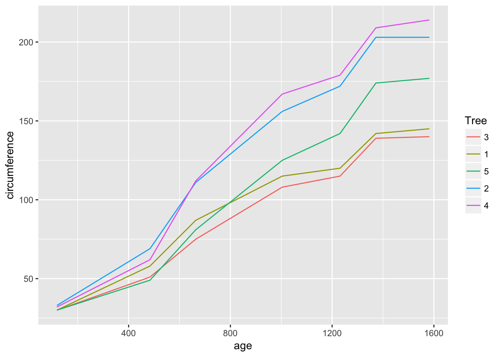

## Warning: package 'knitr' was built under R version 3.4.3While broom is useful for summarizing the result of a single analysis in a consistent format, it is really designed for high-throughput applications, where you must combine results from multiple analyses. These could be subgroups of data, analyses using different models, bootstrap replicates, permutations, and so on. In particular, it plays well with the group_by and do functions in dplyr.
Let’s try this on a simple dataset, the built-in Orange data.frame.
library(broom)
library(dplyr)
data(Orange)
dim(Orange)## [1] 35 3head(Orange)## Grouped Data: circumference ~ age | Tree
## Tree age circumference
## 1 1 118 30
## 2 1 484 58
## 3 1 664 87
## 4 1 1004 115
## 5 1 1231 120
## 6 1 1372 142This contains 35 observations of three variables: Tree, age, and circumference. Tree is a factor with five levels describing five trees. As might be expected, age and circumference are correlated:
cor(Orange$age, Orange$circumference)## [1] 0.9135189library(ggplot2)
ggplot(Orange, aes(age, circumference, color = Tree)) + geom_line()
Suppose you want to test for correlations individually within each tree. You can do this with dplyr’s group_by:
Orange %>% group_by(Tree) %>% summarize(correlation = cor(age, circumference))## # A tibble: 5 x 2
## Tree correlation
## <ord> <dbl>
## 1 3 0.988
## 2 1 0.985
## 3 5 0.988
## 4 2 0.987
## 5 4 0.984(Note that the correlations are much higher than the aggregated one, and furthermore we can now see it is similar across trees).
Suppose that instead of simply estimating a correlation, we want to perform a hypothesis test with cor.test:
cor.test(Orange$age, Orange$circumference)##
## Pearson's product-moment correlation
##
## data: Orange$age and Orange$circumference
## t = 12.9, df = 33, p-value = 1.931e-14
## alternative hypothesis: true correlation is not equal to 0
## 95 percent confidence interval:
## 0.8342364 0.9557955
## sample estimates:
## cor
## 0.9135189This contains multiple values we could want in our output. Some are vectors of length 1, such as the p-value and the estimate, and some are longer, such as the confidence interval. broom’s tidy S3 method, combined with dplyr’s do, makes it easy to summarize the information about each test:
Orange %>% group_by(Tree) %>% do(tidy(cor.test(.$age, .$circumference)))## # A tibble: 5 x 9
## # Groups: Tree [5]
## Tree estimate statistic p.value parameter conf.low conf.high method
## <ord> <dbl> <dbl> <dbl> <int> <dbl> <dbl> <fct>
## 1 3 0.988 14.4 2.90e-5 5 0.919 0.998 Pearson'~
## 2 1 0.985 13.0 4.85e-5 5 0.901 0.998 Pearson'~
## 3 5 0.988 14.1 3.18e-5 5 0.916 0.998 Pearson'~
## 4 2 0.987 13.9 3.43e-5 5 0.914 0.998 Pearson'~
## 5 4 0.984 12.5 5.73e-5 5 0.895 0.998 Pearson'~
## # ... with 1 more variable: alternative <fct>This becomes even more useful when applied to regressions, which give more than one row of output within each model:
Orange %>% group_by(Tree) %>% do(tidy(lm(age ~ circumference, data=.)))## # A tibble: 10 x 6
## # Groups: Tree [5]
## Tree term estimate std.error statistic p.value
## <ord> <chr> <dbl> <dbl> <dbl> <dbl>
## 1 3 (Intercept) -210. 85.3 -2.46 0.0574
## 2 3 circumference 12.0 0.835 14.4 0.0000290
## 3 1 (Intercept) -265. 98.6 -2.68 0.0436
## 4 1 circumference 11.9 0.919 13.0 0.0000485
## 5 5 (Intercept) -54.5 76.9 -0.709 0.510
## 6 5 circumference 8.79 0.621 14.1 0.0000318
## 7 2 (Intercept) -132. 83.1 -1.59 0.172
## 8 2 circumference 7.80 0.560 13.9 0.0000343
## 9 4 (Intercept) -76.5 88.3 -0.867 0.426
## 10 4 circumference 7.17 0.572 12.5 0.0000573You can just as easily perform multiple regressions within each group, as shown here on the mtcars dataset. We group the data into automatic and manual cars (the am column), then perform the regression within each.
data(mtcars)
head(mtcars)## mpg cyl disp hp drat wt qsec vs am gear carb
## Mazda RX4 21.0 6 160 110 3.90 2.620 16.46 0 1 4 4
## Mazda RX4 Wag 21.0 6 160 110 3.90 2.875 17.02 0 1 4 4
## Datsun 710 22.8 4 108 93 3.85 2.320 18.61 1 1 4 1
## Hornet 4 Drive 21.4 6 258 110 3.08 3.215 19.44 1 0 3 1
## Hornet Sportabout 18.7 8 360 175 3.15 3.440 17.02 0 0 3 2
## Valiant 18.1 6 225 105 2.76 3.460 20.22 1 0 3 1mtcars %>% group_by(am) %>% do(tidy(lm(wt ~ mpg + qsec + gear, .)))## # A tibble: 8 x 6
## # Groups: am [2]
## am term estimate std.error statistic p.value
## <dbl> <chr> <dbl> <dbl> <dbl> <dbl>
## 1 0 (Intercept) 4.92 1.40 3.52 0.00309
## 2 0 mpg -0.192 0.0443 -4.33 0.000591
## 3 0 qsec 0.0919 0.0983 0.935 0.365
## 4 0 gear 0.147 0.368 0.398 0.696
## 5 1 (Intercept) 4.28 3.46 1.24 0.247
## 6 1 mpg -0.101 0.0294 -3.43 0.00750
## 7 1 qsec 0.0398 0.151 0.264 0.798
## 8 1 gear -0.0229 0.349 -0.0656 0.949What if you want not just the tidy output, but the augment and glance outputs as well, while still performing each regression only once? First, save the modeling result into a column fit.
regressions <- mtcars %>% group_by(cyl) %>%
do(fit = lm(wt ~ mpg + qsec + gear, .))
regressions## Source: local data frame [3 x 2]
## Groups: <by row>
##
## # A tibble: 3 x 2
## cyl fit
## * <dbl> <list>
## 1 4 <S3: lm>
## 2 6 <S3: lm>
## 3 8 <S3: lm>This creates a rowwise data frame. Tidying methods are designed to work seamlessly with rowwise data frames, grouping them and performing tidying on each row:
regressions %>% tidy(fit)## # A tibble: 12 x 6
## # Groups: cyl [3]
## cyl term estimate std.error statistic p.value
## <dbl> <chr> <dbl> <dbl> <dbl> <dbl>
## 1 4 (Intercept) -0.773 2.23 -0.347 0.739
## 2 4 mpg -0.0818 0.0238 -3.44 0.0109
## 3 4 qsec 0.217 0.0759 2.85 0.0245
## 4 4 gear 0.267 0.245 1.09 0.310
## 5 6 (Intercept) -7.79 3.35 -2.32 0.103
## 6 6 mpg 0.0433 0.0520 0.833 0.466
## 7 6 qsec 0.422 0.0914 4.62 0.0191
## 8 6 gear 0.638 0.205 3.11 0.0529
## 9 8 (Intercept) 0.00597 4.27 0.00140 0.999
## 10 8 mpg -0.177 0.0557 -3.18 0.00989
## 11 8 qsec 0.369 0.193 1.91 0.0848
## 12 8 gear 0.143 0.317 0.451 0.662regressions %>% augment(fit)## # A tibble: 32 x 12
## # Groups: cyl [3]
## cyl wt mpg qsec gear .fitted .se.fit .resid .hat .sigma
## <dbl> <dbl> <dbl> <dbl> <dbl> <dbl> <dbl> <dbl> <dbl> <dbl>
## 1 4 2.32 22.8 18.6 4 2.46 0.142 -0.143 0.197 0.339
## 2 4 3.19 24.4 20 4 2.63 0.120 0.556 0.141 0.243
## 3 4 3.15 22.8 22.9 4 3.39 0.299 -0.243 0.876 0.199
## 4 4 2.2 32.4 19.5 4 1.86 0.174 0.336 0.296 0.304
## 5 4 1.62 30.4 18.5 4 1.82 0.148 -0.207 0.213 0.332
## 6 4 1.84 33.9 19.9 4 1.83 0.210 0.000505 0.432 0.345
## 7 4 2.46 21.5 20.0 3 2.61 0.249 -0.141 0.610 0.332
## 8 4 1.94 27.3 18.9 4 2.16 0.105 -0.223 0.107 0.331
## 9 4 2.14 26 16.7 5 2.06 0.218 0.0849 0.464 0.342
## 10 4 1.51 30.4 16.9 5 1.74 0.201 -0.225 0.396 0.324
## # ... with 22 more rows, and 2 more variables: .cooksd <dbl>,
## # .std.resid <dbl>regressions %>% glance(fit)## # A tibble: 3 x 12
## # Groups: cyl [3]
## cyl r.squared adj.r.squared sigma statistic p.value df logLik
## <dbl> <dbl> <dbl> <dbl> <dbl> <dbl> <int> <dbl>
## 1 4 0.780 0.686 0.319 8.27 0.0106 4 -0.567
## 2 6 0.970 0.940 0.0873 32.3 0.00874 4 10.1
## 3 8 0.652 0.548 0.511 6.25 0.0116 4 -8.10
## # ... with 4 more variables: AIC <dbl>, BIC <dbl>, deviance <dbl>,
## # df.residual <int>By combining the estimates and p-values across all groups into the same tidy data frame (instead of, for example, a list of output model objects), a new class of analyses and visualizations becomes straightforward. This includes
In each of these cases, we can easily filter, facet, or distinguish based on the term column. In short, this makes the tools of tidy data analysis available for the results of data analysis and models, not just the inputs.